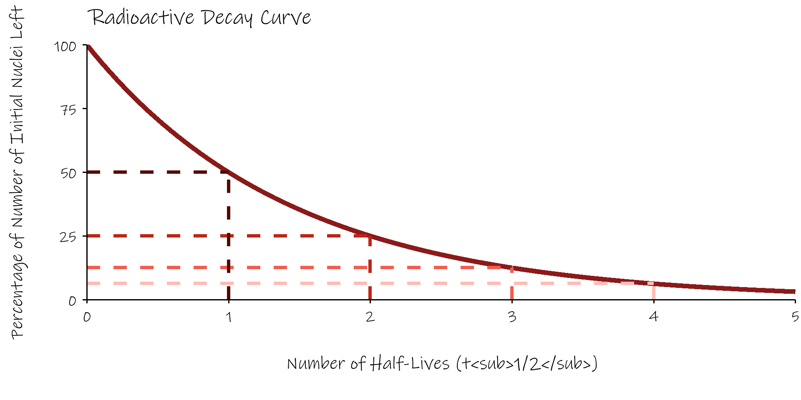
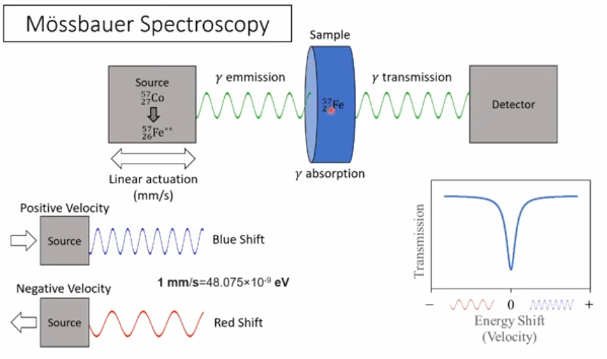
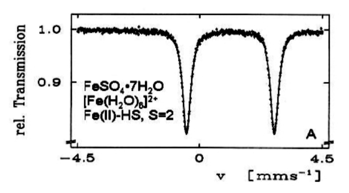
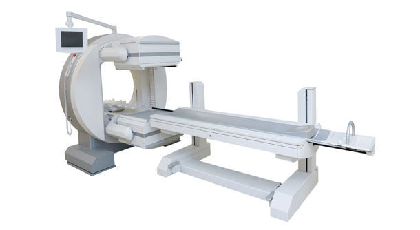

![]()
| Nucleus | Half Life | Spin State | Magnetic Moment (μN) |
|---|---|---|---|
| \(^{56}_{25}Mn\) | 2.58 h | 3+ | +3.2266(2) |
| \(^{75}_{36}Kr\) | 4.3 m | 5/2+ | -0.531(4) d |
| \(^{97}_{38}Sr\) | 0.40 s | 1/2- | -0.498(2) |
| \(^{103}_{45}Rh\) | stable | 1/2- | -0.8840(2) |
| \(^{126}_{55}Cs\) | 1.64 m | 1+ | +0.777(4) |
| \(^{137}_{57}La\) | 6 x 10*4 y | 7/2+ | +2.695(6) |
| \(^{147}_{65}Tb\) | 1.7 h | 1/2+ | +1.70(5) |
| \(^{185}_{77}Ir\) | 14.4 h | 5/2- | 2.605(13) |
| \(^{194}_{81}Tl\) | 34 m | 2- | +0.140(3) |
| \(^{201}_{83}Bi\) | 108 m | 9/2- | 4.8(3) |
04 - Applications
.column-line { border-right: 1px solid #ccc; }
Summary
Nuclear radiation can be very useful. We’ve already mentioned its use in medical diagnostics and therapy, and in the production of nuclear energy. In this section we’ll discuss further applications such as radiocarbon dating, radiometric dating of rocks, chemical environment analysis by the Mössbauer effect, and nuclear spins.
Contents
Radioactive Decay Laws
- half lives and activities
Radioactive Dating
radiocarbon dating of biological samples
dating rocks
Mössbauer Spectroscopy
Nuclear Spins
Diagnostic Nuclear Medicine
Therapeutic Nuclear Medicine
Radioactive Decay Laws
- decay of individual nucleus is a totally random process, occurs with certain probability in a certain time period
- for large numbers of nuclei can use statistics
- rate of disintegrations from a nuclear source is proportional to the number of radioactive nuclei present
Mathematics of Radioactive exponential decay
- \(-\frac{dN}{dt}\;\alpha\;N\)
- \(-\frac{dN}{dt}\;=\;\lambda\;N\)
- \(N\;=\;N_0e^{-\lambda t}\)
- where N is the number of radioactive nuclei present at a particular time
- \(-\frac{dN}{dt}\) is the rate of decrease in N.
- \(N_o\) is the original number of nuclei present.
- \(\lambda\) is called the radioactive decay constant and depends on the nature of the nucleus
Radioactive Half Life, \(T_{1/2}\)
- a convenient way of discribing radioactive decay is in terms of the radioactive half life, \(T_{1/2}\) .
- the half life is defined as the time taken for the number of radioactive nuclei present in a source to fall to half it’s original value.
- half lives of naturally occurring radioisotopes vary over a wide range
- \(3 \times 10^{-7}\)s (\(^{212}Po\)) to \(1.4 \times 10^{10}\)years (\(^{232}Th\))
the half life is related to the decay constant by:
- \(T_{1/2}\;=\;\frac{log_e2}{\lambda}\;=\;\frac{0.693}{\lambda}\)
Radioactive Decay Curve

Measurement of Radiation
Activity
- This is the number of disintegrations occurring per second.
- It is easily measured with a Geiger counter.
- This activity is proportional to the number of radioactive atoms in the sample.
- \(Activity\;=\; -\frac{dN}{dt}\; =\;\lambda N\)
- for radioactive dating, for a source activity A we get \(A \; = \;A_0e^{-\lambda t}\)
- so \(t \; = \frac{-1}{\lambda} \; ln(\frac{A}{A_0})\)
The units of activity are:
- Curie (Ci)
- \(1\;Ci\; =\; 3.7 \times10^{10}\; disintegrations/sec\)
- A clinical source of \(^{60}Co\) has an activity of several Ci
- An internally administered dose for cancer treatment would have an activity of \(10^{-3}\) Ci
- Becquerel (Bq)
- 1 Bq = 1.0 disintegrations /sec
- This is the SI. unit (1 Ci = \(3.7 \times 10^{10}\) Bq)
Radioactive Dating
we’ll look at this in two regimes
radiocarbon dating using \(^{14}C\) for historic, biological samples
dating of rocks using \(^{235}U\) / \(^{207}Pb\) and \(^{238}U\) / \(^{206}Pb\)
Radiocarbon Dating - \(^{14}C\)
natural carbon has two isotopes (\(^{12}C\) and \(^{13}C\))
\(^{14}C\) produced in the upper atmosphere (\(^{14}N \; + \; ^1n \; \longrightarrow \; ^{14}C \; + \; ^1p\))
- those neutrons are produced by cosmic rays (mostly highly energy protons) striking other nuclei)
\(^{14}C\) has a half-life of 5730 years and \(\beta^-\) decays to \(^{14}N\) (158keV)
- 1g of (fresh) carbon produces about 15 decays per minute (0.255 Bq)
Radiocarbon dating
an archeological sample of 250mg of carbon exhibits a radioactivity of 5.1 mBq from \(^{14}C\). Calculate the age of the sample.
first calculate \(\lambda\) from the half life
- \(\lambda \; = \; \frac{log_e(2)}{T_{1/2}} \;= \; \frac{0.693}{5730} \; = \; 121 \times 10^{-6} yr^{-1}\)
at time zero, 1g of carbon produces 0.255 Bq
our sample of 250mg produces 5.1 mBq
- so if our sample was 1g we’d get \(5.1 \; mBq \times \; \frac{1000}{250} \; = \; 20.4 \; mBq \; = \; 0.0204 Bq\)
radioactivity (and thus total amount of \(^{14}C\)) has decreases by \(\frac{0.0204}{0.255} \; = \; 0.08\)
age of sample given by \(t \; = \; \frac{log_e(0.08)}{-\lambda} \; = \; \frac{-2.5257}{121 \times 10^{-6}} \; = \; 20,873 \; years\)
Amount of \(^{14}C\) in Carbon
given that natural carbon has a radioactivity of 0.255 Bq per gram from \(^{14}C\), calculate what fraction of carbon atoms are \(^{14}C\).
first calculate \(\lambda\) from the half life, but this time in seconds
- \(\lambda \; = \; \frac{log_e(2)}{T_{1/2}} \;= \; \frac{0.693}{5730 \times 365.25 \times 24 \times 3600} \; = \; 3.833 \times 10^{-12} s^{-1}\)
then calculate the number of \(^{14}C\) atoms, N, in one gram from the activity:
\(-\frac{dN(t)}{dt} \; = \; \lambda \; \times \; N \; = 0.255 s^{-1}\)
\(N \; = \; \frac{0.255}{3.833 \times 10^{-12}} \; = \; 66.52 \times 10^{9} \; atoms/gram\)
then calculate the total of carbon atoms in one gram
- \(\frac{1}{12.011} \; \times \; 6.022 \times 10^{23} \; = \; 5.0137 \times 10^{22} \; atoms/gram\)
take the ratio of the two to get
- fraction of \(^{14}C\) atoms to be \(\frac{66.52 \times 10^{9}}{5.0137 \times 10^{22}} \; = \; 1.33 \times 10^{-12}\)
Limitations of \(^{14}C\) dating
assumes atmospheric content of \(^{14}C\) has been stable over time (50,000 years)
flux of cosmic rays adjusted by strength of Earth’s magnetic dipole moment
- e.g. magnetic dipole minimum 40,000 years ago lead to doubling of atmospheric \(^{14}C\)
geomagnetic latitudinal variation
- more cosmic rays at high latitudes, but atmosphere pretty well mixed
in recent times, burning fossil fuels has diluted \(^{14}C\) levels whereas nuclear weapons testing in the 1950’s has boosted the amount because of the number of neutrons emitted from atomic bombs
time limitations
after ~50,000 years there won’t be much \(^{14}C\) left
measure \(^{14}C\) directly using mass spectrometry rather than measuring radiation
Dating of Rocks using U / Pb Ratios
both \(^{238}U\) and \(^{235}U\) are radioactive and eventually decay to \(^{206}Pb\) and \(^{207}Pb\) respectively by emitted \(\alpha\) particles
their half-lives are convenient for geology; \(^{235}U\) is 0.7 billion years and \(^{238}U\) is 4.5 billion years
Zircon \(ZrSiO_4\) is an extremely stable and long-lived mineral
zirconium is chemically compatible with uranium but not at all with lead
- when formed \(ZrSiO_4\) will contain lots of uranium in place of Zr, but no Pb
get \(t \; = \frac{T_{1/2}}{0.693} \; log_e(\frac{1}{R} + 1)\) where \(t\) is the age of the rock and \(R\) is the ratio of uranium to lead
Age of Rocks from Peru
a zircon grain from a rock from Peru has a ratio of \(^{235}U\)/\(^{207}Pb\) of 0.0833 and a ratio of \(^{238}U\)/\(^{206}Pb\) of 2.51. Use both ratios to calculate two ages for this zircon grain. Are the figures compatible?
for \(^{235}U\)/\(^{207}Pb\)
\(t \; = \; \frac{T_{1/2}}{0.693} \; log_e(\frac{1}{R} + 1)\)
\(t \; = \; \frac{0.7 \times 10^9}{0.693} \; log_e(\frac{1}{0.0833} + 1) \; = \; 2.59 \; billion \; years\)
for \(^{238}U\)/\(^{206}Pb\)
- \(t \; = \; \frac{4.5 \times 10^9}{0.693} \; log_e(\frac{1}{2.51} + 1) \; = \; 2.18 \; billion \; years\)
these values don’t agree (called discordant).
The zircon grain must have been damaged/altered sometime since its formation
Mössbauer Spectroscopy
as well as emitting \(\gamma\) rays, nuclei can also absorb them
but have to be just the right energy
in practise this means coming from the same nucleus
problem then is the recoil of the nucleus on both emission and absorbtion
this soaks up some of the energy from the \(\gamma\) ray
get recoil energy \(= \; E_R \; = \; \frac{E_{\gamma}^2}{2Mc^2}\) where M is the mass of the nucleus
e.g. 129.43 keV \(\gamma\) from \(^{191}Ir\) has recoil loss of \(E_R \; = \; \frac{E_{\gamma}^2}{2Mc^2} \; = \; \frac{(129.43 \times 10^3 \; \times \; 1.602 \times 10^{-19})^2}{2 \; \times \; 190.96 \; \times \; 1.6605 \times 10^{-27} \; \times \; (3 \times 10^8)^2} \; = \; 0.0453 eV\)
this doesn’t sound like much, but is way bigger than the natural linewidth of the transition \(\Delta E \; = \; \frac{\hbar}{T_{1/2}} \; = \; 1.34 \times 10^{-16} eV\) for the 4.9s half life of \(^{191}Ir\)
and also, have to double \(E_R\) as effect both absorbtion and emission
Mössbauer Spectroscopy (continued)
answer is to insert radioactive nuclei into a rigid solid
then recoil is from solid as a whole rather than indiviual nuclei
not hard to compensate for this difference using Doppler Effect
\(v \; = \; c \frac{2 \times E_R}{E_{\gamma}}\)
leads to velocities of ~1 mm/sec
- as opposed to ~ 100 m/sec for free ions
gives exquisite precision (1 part in \(10^{13}\))
Applications of Mössbauer Effect
key tool for studying chemical environments of relevant ions:
- \(^{57}Fe\), \(^{119}Sn\), \(^{121}Sb\), \(^{151}Eu\)
beautiful demonstration of General Relativity
- red-shift of photons as they climb through Earth’s gravitational field


from Gütlich et al.
Nuclear Spins and Magnetic Moments
charged particles behave like little magnets because of both:
their orbital motion, for example electrons in an atom
but they also appear to have an intrinsic motion, their spin
for the electron, this latter leads to a magnetic moment given by:
\(\mu_e \; = \; g \frac{e \hbar}{2m_e} \; = g \; \mu_B\)
where \(\mu_B \; = \; 9.2741 \times 10^{-24} J/T\) is the Bohr Magneton
for nucleons things are a little more complicated
analogous nuclear moment is expressed in terms of the nuclear magneton (\(\mu_N\))
\(\mu_N \; = \; \frac{e \hbar}{2m_p} \; = \; 5.0508 \times 10^{-27} J/T\)
\(\mu_p \; = \; 2.793 \; \mu_N\)
\(\mu_n \; = \; -1.913 \; \mu_N\)
Magnetic Moments of Nuclei
in a nucleus, in the ground state paired nucleons will cancel out their magnetic moments
even / even nuclei has zero magnetic moment (in their ground state)
overall magnetic moment given by the values from the final, unpaired proton and/or unpaired neutron
Nuclear Medicine
diagnostics
therapeutics
we’ll look at a selection of modalities for diagnostics
MRI
fMRI
\(\gamma\) cameras
PET
SPECT
Magnetic Resonance Imaging
nuclei with magnetic spins will tend to line up in a magnetic field (~1.5T)
will have different energies for spin up versus spin down
if we give them just the right energy they can flip-flop between spin up or down
can detect these flips and see where the nuclei are
have gradient applied magnetic field and apply radio frequency at right frequency to do the flips
reconstruct tomographically
very good for soft tissue (most MRI tunes to \(^1H\))
Magnetic Resonance Imaging - Types
- two types
- T1 tunes to fat, shows anatomy
- T2 tunes to water, shows pathology
- MRI images take several minutes, can't have body movement
- can do coronary studies by ECG gatingfMRI
carry out sequence of MRI scans while patient is asked to perform tasks
differences in MRI scans between times when tasks are performed can indicate which (brain) areas are involved
usually look at blood demand (BOLD) in the brain rather than direct neuronal activity
Nuclear Medicine
introduce radioactive tracers in to the body and see where they go
e.g. iodine will migrate to the throid gland
use \(^{123}I\)
13 hour half life
decays by electron capture followed by a 159 keV \(\gamma\) ray
also \(^{99}Tc\)
attach to a wide number of bio-molecules
half life of 6 hours
emits 140 keV \(\gamma\) ray
Gamma Camera
used to detect these \(\gamma\) rays
consists of:
outer tubes of lead to only permit passage of \(\gamma\)rays perpendicular to camera surface
scintillation crystal (NaI) that will emit optical flash when \(\gamma\) ray strikes
camera to detect thesee flashes
~1 metre diameter (double) disk that can rotated around the body

PET (positron emission tomography)
introduce radioactive element in to body
it emits a positron
this annihilates with an electron
emits 2 \(\gamma\) rays of 511keV in exactly opposite directions
when these are detected, can figure out line along which original radioactive element was
usually use FDG molecule, glucose-like
laced with \(^{18}F\) instead of an \(OH^-\) group
\(^{18}F\) is a positron emittter, \(T_{1/2}\) = 110 minutes
anomalous build-up of this glucose means cells with higher metabolism, maybe cancer
SPECT (Single Photon Emission Computed Tomography)
label pharmachemical with \(\gamma\) emitter
- often \(^{99}Tc\)
Therapeutic Nuclear Medicine
goal is to reduce unwanted tissue in body
cancerous tissue
overactive thyroid gland
multistage process
radiation induces physical changes in body - ionises molecules
these ionised molecules induce chemical changes, produce free radicals
- these are neutral molecules with an unpaired electron
these free radicals induce biological changes in biological function
- this can take a long time to manifest
Therapeutic Nuclear Medicine - Oxygen Effect
presence of oxygen exacerbates effects of radiation
- soaks up free electrons produced by radiation so radiation damage can’t simply be healed by ionised omecules recombining with their lost electron
cancerous tissue has less oxygen
- means radiation effect on tumours is unfortunately about half what it should be
Equations
\(\frac{dN}{dt} \; \alpha \; N\)
\(N\;=\;N_0e^{-\lambda t}\)
\(t_{1/2}\;=\;\frac{log_e2}{\lambda}\;=\;\frac{0.693}{\lambda}\)
\(t \; = \frac{-1}{\lambda} \; ln(\frac{A}{A_0})\)
\(t \; = \frac{T_{1/2}}{0.693} \; log_e(\frac{1}{R} + 1)\)
\(E_R \; = \; \frac{E_{\gamma}^2}{2Mc^2}\)
\(\Delta E \; = \; \frac{\hbar}{T_{1/2}}\)
\(v \; = \; c \frac{2 \times E_R}{E_{\gamma}}\)
\(\mu_N \; = \; \frac{e \hbar}{2m_p} \; = \; 5.0508 \times 10^{-27} J/T\)
References

Nuclear Physics